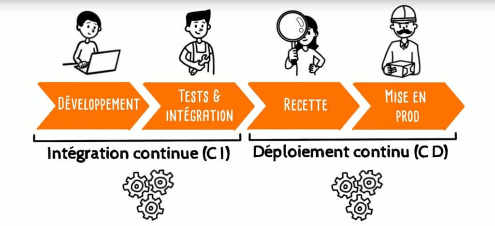
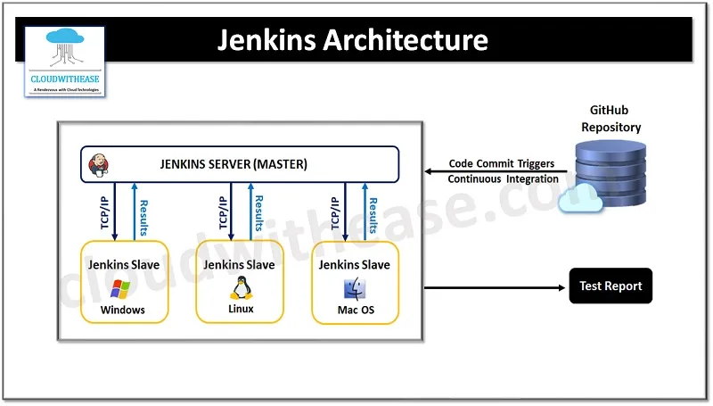
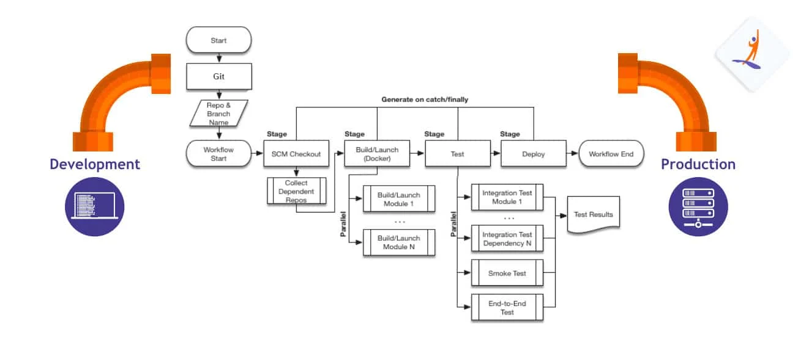
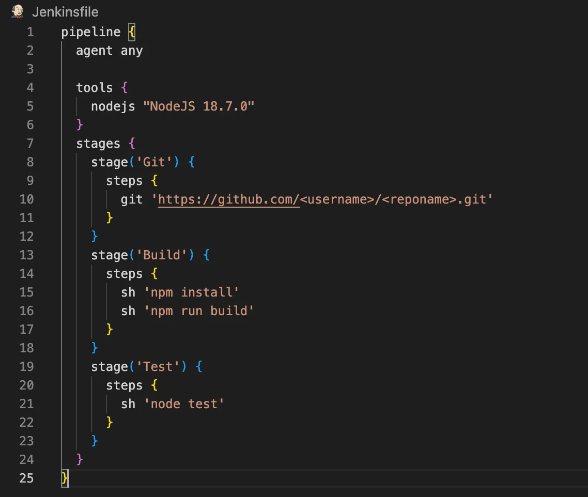
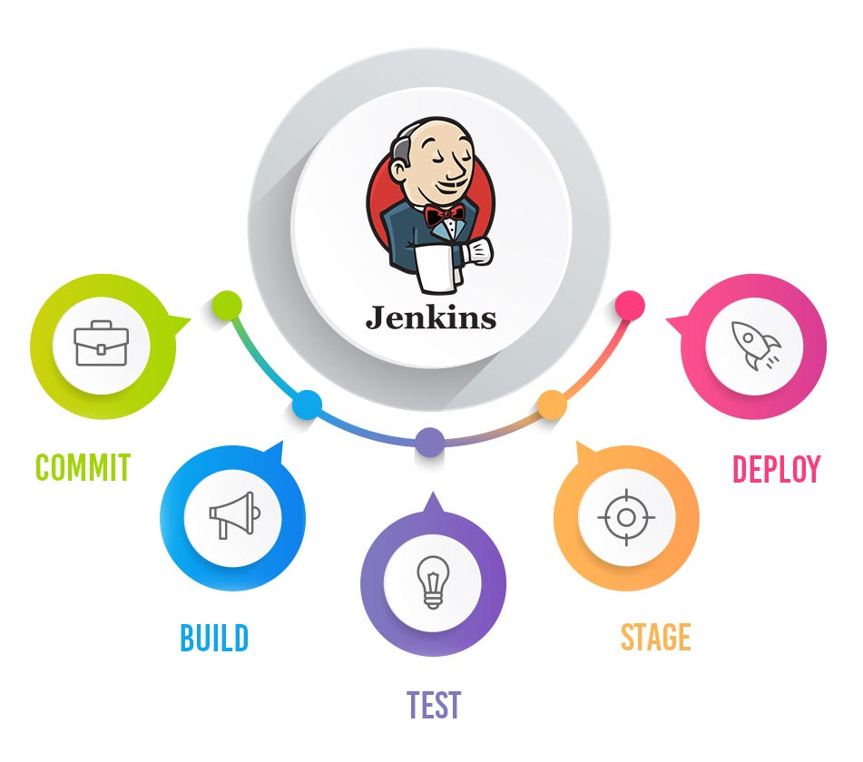
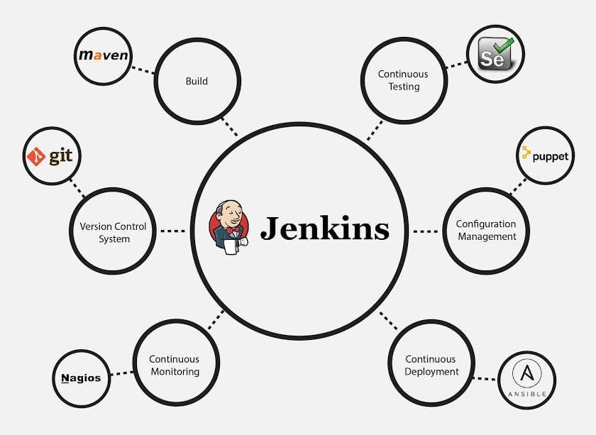
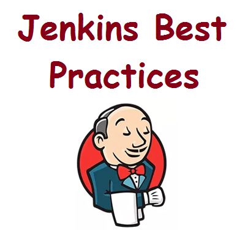

1 / 12

Formation DevOps - Jour 3
Intégration Continue (CI) avec Jenkins
Présenté par DERNANE DJILALI
Introduction à l'Intégration Continue (CI)
- Définition : L'intégration continue (CI) est une pratique DevOps visant à automatiser l'intégration du code développé par plusieurs contributeurs dans un projet logiciel partagé.
- Objectifs :
- Détecter rapidement les erreurs d'intégration.
- Automatiser les tests et les déploiements.
- Accélérer la livraison des applications.

Avantages de l'Intégration Continue
.jpg)
- Détection rapide des bugs
- Feedback immédiat
- Amélioration de la qualité du code
- Réduction des délais de livraison
- Facilitation des déploiements fréquents
Introduction à Jenkins
- Jenkins : Un outil open-source d'automatisation de l'intégration continue, basé sur Java et extensible via des plugins.
- Objectifs :
- Exécution de jobs automatisés
- Support des pipelines
- Gestion des notifications (email, Slack, etc.)
Architecture de Jenkins

Jenkins Pipeline – Définition
Un pipeline est une suite d'étapes qui permettent de construire, tester et déployer une application de manière automatisée.

Structure d'un Pipeline Déclaratif

Gestion des Jobs Jenkins
Méthodes de Création :
- Création manuelle via interface.
- Création via Jenkinsfile (pipeline as code).
Planification & Déclenchement :
- Planification des jobs avec cron.
- Exécution sur déclencheur : Push Git, planification ou API externe.

Gestion des Plugins Jenkins
Importance des Plugins :
- Ajout de nouvelles fonctionnalités (Git, Docker, Slack, etc.).
- Personnalisation des étapes CI/CD.
Exemples de plugins utiles :
- Git Plugin : Intégration avec Git.
- Docker Plugin : Support des conteneurs Docker.
- Pipeline Plugin : Gestion des pipelines.
- Email Extension Plugin : Notifications avancées.

Webhooks Jenkins
Avantages des Webhooks :
- Déclenchement automatique des pipelines
- Intégration en temps réel avec Git
- Réduction du temps de feedback
- Automatisation complète du workflow
Configuration :
- Activer le plugin "Generic Webhook Trigger"
- Configurer l'URL du webhook dans Git
- Définir les conditions de déclenchement
- Tester la connexion webhook
Bonnes Pratiques Jenkins
- Utiliser des agents dédiés.
- Garder les Jenkinsfiles sous contrôle de version.
- Éviter les pipelines trop complexes.
- Sécuriser l'accès Jenkins.
- Mettre à jour régulièrement les plugins.

Thank You!
Questions?
N'hésitez pas à poser vos questions ou à demander des clarifications.